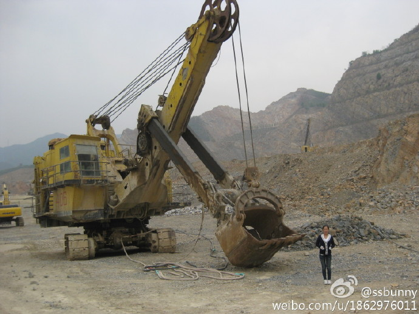

服务客户： 中国万达集团
项目类别： 形象片
袅袅碧海岸，四月花语香。
这支热气腾腾的片子，经过了两个月的打磨，终于圆满交付。
在这个项目中，除了完成前期沟通、创意创作工作以外，还担任了一回拍摄现场场记，为了凸显一名业余场记的专业性，特此做了场记总结。
【拍摄地点：东营 / 拍摄周期：三天】
拍摄第一天，摄制组一行早早就位等待开机。
早晨7点30分，职工陆陆续续的走进厂区。人群中一个特别的景色吸引了我的注意，短短的时间内身边经过的残疾人士不下十人，而从他们脸上我所看到的，却都是一种发自内心对于生活的热爱。我不禁猜想，或许在他们的意识里，并没有与众不同这样的字眼，只是本能的在实现自我价值，享受并热爱着自己的生活。这道无声的景色感动了我许久，也悄然放大着一个企业对于社会责任的担当，新的一天就这样开始了。
从外景到办公内景，从会议到外宾来访，从实验室到生产车间，拍摄过程有条不紊的按照通告计划一步步进行。
拍摄的第二天，生产二部又一次超出了我的想象。
一尘不染居然可以用来形容一个生产轮胎的车间，这就是万达宝通，一个从细微小节就要求严谨的企业，处处充盈惊喜，厚德、自强、致远的灵魂无时不刻地被展现。150万套/年全钢无内胎项目，平均每天4200余套的产出，每一只合格轮胎都要历经数道苛刻检测，数据可以洞悉价值的汇聚，亦可以让更多的人看见万达宝通广博的未来。
拍摄第三天，拍摄遇到了小小的困难。
中午由于车间协调出现问题，导致白天的工作任务没有完成，剩下一个车间的生产场景没有拍到，直到夜班工人就位，才把拍摄工作顺利完成。
【拍摄地点：北京 / 拍摄周期：两天】
抵达北京灯火通明，阴湿的柏油路面泛起一层金光，依稀可以寻到春雨的踪迹。
这场春雨拨开了数日的阴霾，和煦的阳光穿透丝丝清冷，蓝天、白云，完美的拍摄天气。
北京拍摄第一天，赶场城市街道、建筑工地、学校三个景点。
学校场景的拍摄更是兴师动众，小小的院落里人头攒动，在导演无数“卡”的喊声中镜头被完美捕捉，片场里混血小演员不时逗得大家欢声笑语。16个小时的连轴忙碌，第一天的拍摄任务顺利结束。
第二天拍摄内容是校车和矿山。
沿着公路穿行于群山之中，过了许久大山深处的矿场尽露在眼前，连司机师傅都感叹，在北京生活了几十年竟然不知道还有这样的世外矿厂，接下来又是紧张的拍摄工作。矿山场景拍完后，北京拍摄圆满完成。
场记留念

视频欣赏